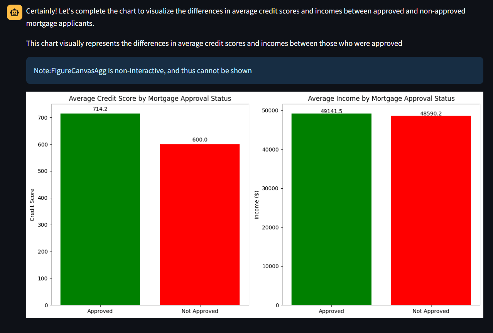

Data Science Orientation
IBM and Coursera
Foundational concepts and practices in data science.
Data ScienceData AnalyticsPythonData Literacy
Issued via Credly
Credly credential
View on Credly ↗
Early-Career Data & AI Engineer | Building Agentic AI & Analytics Systems
"Data-driven first. AI-enabled second."
I build and contribute to intelligent systems that connect trusted data, analytics, APIs, automation and AI to solve real business problems.
Data engineering, analytics systems, AI workflows and enterprise delivery.
I am an early-career Data & AI Engineering professional developing at the intersection of data engineering, analytics systems, AI engineering, agentic systems and enterprise AI.
My work is shaped by a practical belief: useful AI starts with trusted data, clear requirements, reliable APIs, measurable outputs and governance that fits the environment.
At IBM, my exposure has grown from technical enablement into hands-on implementation, proof-of-concepts, client discovery, requirements support, architecture conversations, governance considerations and solution engineering.
ETL, SQL, Db2, PySpark, Kafka, data validation, data quality, analytics-ready datasets and governance-aware design.
FastAPI services, REST and GraphQL integration, MCP servers, backend concepts, Docker, GitHub and deployment readiness.
LLM applications, Natural Language-to-SQL, prompt engineering, AI evaluation, tool calling, agent workflows and RAG concepts.
Technical discovery, requirements, architecture discussions, stakeholder alignment, PoC planning, sizing and governance exposure.
A developing path from IT foundations into data, AI systems and enterprise solution delivery.
Hands-on and client-facing exposure across Python, SQL, ETL, FastAPI, Kafka, Confluent, PySpark, LLM applications, MCP/tool calling, IBM Watsonx technologies, technical discovery, requirements support, architecture discussions and governance-aware solution engineering.
Supported technical requirement activities, functional and non-functional requirement thinking, current-state architecture analysis, PoC planning, stakeholder alignment, technical onboarding and solution-positioning conversations in regulated enterprise contexts.
Supported physics labs, programming/web-development students, computer hardware labs and technical learning environments. Built transferable strengths in data interpretation, troubleshooting, teaching, quality assurance and explaining technical concepts clearly.
Capabilities grouped by evidence level instead of inflated proficiency scores.
Evidence language: Built = personally implemented; Contributed = actively implemented a portion; Supported = assisted teams or workstreams; Exposed = worked around the technology; Trained = completed learning/labs; In Progress = currently building or learning.
IT, computer science, software development, data analysis and technical communication foundations.
Academic foundation across computer science, information technology, programming, databases, data structures, networking, statistics/data analysis, physics and software engineering.
Supported lab sessions, experimental data collection, regression/error analysis, quality assurance, troubleshooting and student explanation of technical concepts.
Supported C#, HTML, CSS, JavaScript, database-backed application concepts, code support and backend/software-development fundamentals.
Registered programme covering networking, computer architecture, green technologies, digital literacy, end-user computing, business communication and workplace readiness.
Selected work organized around data foundations, analytics, AI reasoning, APIs and agentic architecture.

LLM-enabled performance analytics concept showing the jump from generation to structured system behavior: feedback interpretation, database analysis, MCP tool calls and output artifacts such as PDF reports and CSV development outputs.
Worked with BA410/BA700 regulatory data, risk-oriented marts, PySpark transformations, Iceberg-style architecture, fraud/risk metrics, anomaly-oriented analytics and prompt-driven querying concepts.
Event-driven platform pattern using producer, Kafka, consumer, processing logic, FastAPI, risk scoring, Streamlit analytics and AI-generated explanations for anomaly and risk reasoning.
Converted roughly 10 years of fleet-maintenance CSV data across 11 sources into a normalized Db2 model using 3NF principles, Python ETL, null detection, mapping and analytics-ready preparation.
Integrated financial information from 30+ REST APIs, worked with structured ingestion, Spark/Presto SQL, lakehouse-style analytics and LLM Natural Language-to-SQL querying patterns.
Designed and built a local MCP server with tool registration, request handling, custom tools, local testing and validation through MCP Inspector to demonstrate AI-to-system integration.
Enterprise AI concept for reducing friction between sales, client engineering, consulting and delivery through opportunity intelligence, technical discovery, reusable knowledge, RAG, MCP/APIs and human-in-the-loop workflows.
Explored GraphQL, REST, MongoDB, Python/C# experimentation and an AI-enabled skill-gap analysis concept using backend services, non-relational data and agent-oriented thinking.
Technical leadership, teaching, community contribution and clear communication.
Led student teams, coordinated community initiatives, supported training delivery and communicated technical concepts to non-technical audiences.
Supported Grade 10/11 learners, first-year university students and community members with Office 365, Excel, Word, PowerPoint and practical computer productivity skills.
Organized Team 14 watsonx Challenge collaboration and shared Kafka/Confluent learning with an MEA AI engineering community.
Practices a communication pattern of Situation -> Recommendation -> Reason -> Business Impact -> Next Step, with the goal of becoming known for bringing clarity.
Continuous learning shown carefully: training, badges and certifications are not treated as the same thing.
Credly credentials are embedded below. Other courses, preparation and professional learning remain separate so they are not presented as formal certifications.
Foundational concepts and practices in data science.
Foundational knowledge of relational database concepts, SQL and RDBMS technologies.
Core data engineering concepts, pipelines, ETL and ELT, integration and troubleshooting.
RAG application concepts with MongoDB, including vector search and retrieval workflows.
The ecosystem behind the portfolio and future RAG-powered profile assistant.
Let's Build Something Intelligent
Open to Data & AI Engineering, analytics systems, technical consulting, and AI automation conversations.
Quick questions